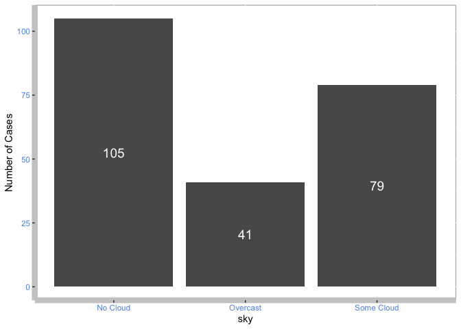

Overview
wildlifestrikes is a package which analyses the wildlife strikes to aircraft in the United States from 1991 to 2018.
Installation
You can install the development version from GitHub with:
# install.packages("devtools")
devtools::install_github("etc5523-2022/rpkg-Minminsoh")Purposes of this package
The goals of the package are to:
- Inform users of the conditions and factors that affect the frequency and occurrence of wildlife strikes on aircraft
- Analyse the number of cases of wildlife strikes on aircraft in the user selected states
- Analyse the impact of wildlife strikes on airlines in terms of number of cases, damage levels and repair costs
- Calculate the correlation and p-value between selected variable and repair cost incurred due to wildlife strikes
- Provide an easy to use and clear platform to digest and understand the data using Shiny
Usage
The below examples use the built-in dataset wildlife_strikes and USmap.
The package contains the following functions:
- The function,
count_frequency()calculates the frequency of the observations for a particular variable in thewildlife_strikesdata set in a tibble format whilecount_frequency_plot()shows the frequency of observations in a bar plot. It is helpful in identifying which condition in the variable is associated with higher occurrence of wildlife strikes to aircrafts.
count_frequency(sky)
#> # A tibble: 3 × 2
#> # Groups: sky [3]
#> sky n
#> <chr> <int>
#> 1 No Cloud 105
#> 2 Overcast 41
#> 3 Some Cloud 79
count_frequency_plot(sky)
- The function,
cases_statemap()presents the number of wildlife strikes reported in the selected states from 1991 to 2018 in a choropleth map. Alternatively, runcases_state()to show the observations for the selected states in a tibble format.
cases_statemap(c("arizona", "california", "florida", "colorado", "texas"))
cases_state(c("arizona", "california", "florida", "colorado", "texas"))
#> # A tibble: 5 × 3
#> # Groups: Abbreviation of State [5]
#> `Abbreviation of State` `Number of cases` `Name of state`
#> <chr> <int> <chr>
#> 1 AZ 5 arizona
#> 2 CA 34 california
#> 3 CO 8 colorado
#> 4 FL 18 florida
#> 5 TX 26 texas- The function,
cases_airline()returns a message to you on the number of attacks incurred by your selected airline in the your selected year.
cases_airline("AMERICAN AIRLINES", 2018)
#> [1] "AMERICAN AIRLINES incurred 4 wildlife strikes to the aircrafts in 2018."- You can get further information on the number of attacks by your selected airline in your selected year by damage levels by running the function
damages_airline().
damages_airline("AMERICAN AIRLINES", 2011)
#> # A tibble: 3 × 4
#> # Groups: operator, damage, incident_year [3]
#> operator damage incident_year n
#> <chr> <fct> <dbl> <int>
#> 1 AMERICAN AIRLINES Minor 2011 3
#> 2 AMERICAN AIRLINES Uncertain 2011 1
#> 3 AMERICAN AIRLINES Substantial 2011 2- The function
hist.R(), builds the histogram which shows the distribution of repair costs incurred for the selected airline from 1991 to 2018 due to wildlife strikes.
histPlot("AMERICAN AIRLINES", 10)
- The function
calculate_corr()computes the correlation and p-value between that selected variable and repair costs incurred on airline due to wildlife strikes. This is helpful in finding the relationship between the variable and repair costs incurred on airline due to wildlife strikes.
calculate_corr(var = height)
#> # A tibble: 1 × 2
#> correlation pval
#> <dbl> <dbl>
#> 1 -0.0418 0.533- There are 2 functions built solely to support the Shiny
-
ui_inputs.Rcreates user interface inputs for the Shiny application -
theme_plot.Rcreates a custom theme for the bar plots and maps
Launch Shiny App
To launch the shiny app, run the following:
run_app()I’ve also built an Shiny Application where some of the functions are embedded in the application. The Shiny app contains three tabs.
The first tab is built by the
count_frequency()function and prompts you to guess answers to three questions relating to the factors/conditions affecting wildlife strikes.The second tab is built by the
plot_map.Rfunction (specificallycases_state(input_state)andcases_statemap(input_state)) and shows the number of cases from 1991 to 2018 for your selected U.S. State in tibble format and on the choropleth map.The third and final tab is built by
cases_airline()function which returns a message to you on the number of wildlife strike cases incurred by the selected airplane in the selected year. This is then further categorised into different damages level by using thedamages_airlinefunction.hist.Rfunction creates a histogram showing the distribution of repair costs incurred ranging from 1991 to 2018 for the airline you have selected.
Learn more about the package
Refer to the pkgdownwebsite to learn about the package and the functions built in this package. If you would like access the comprehensive guide on the dataset used, examples on how to use the functions, you can refer to the vignette.